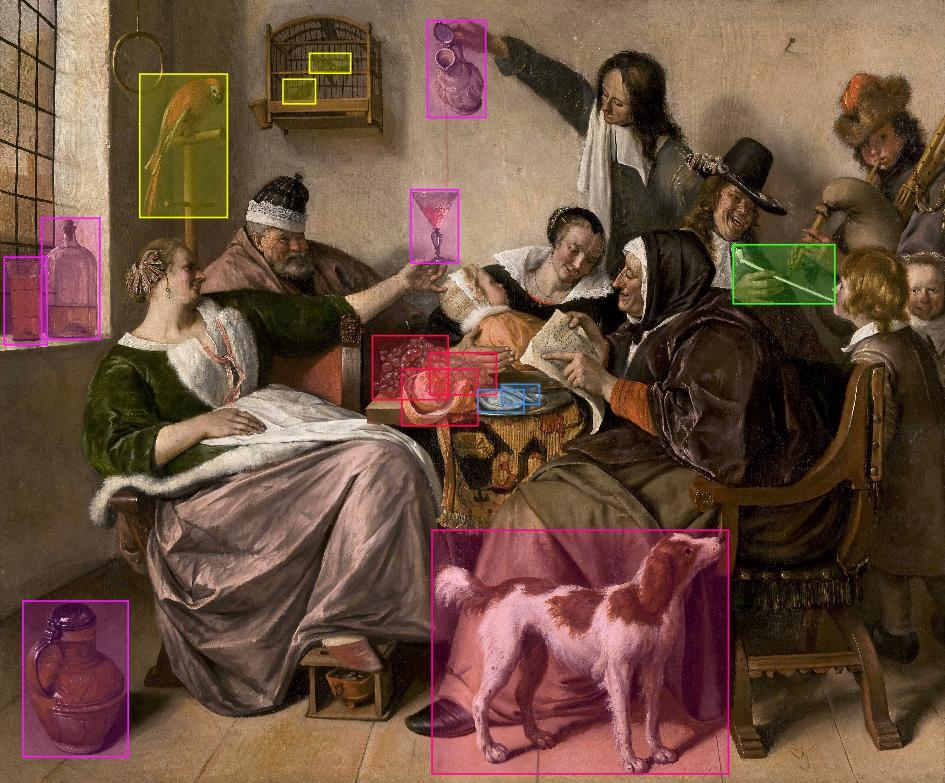

|  |
Olfaction is a crucial element of human experience but did not yet gain a lot of attention in cultural heritage. The ICPR-ODeuropa Olfactory Recognition (ODOR) challenge has been created in the context of the EU-funded Odeuropa Project, which aims to remedy this shortcoming by promoting, preserving, and recreating the olfactory heritage of Europe. Participants are challenged to create systems to detect a diverse range of smell-related objects in historical artworks. The detection targets are objects that either emit strong smells themselves, like different kinds of flowers, or else implicitly hint at the presence of a smell, e.g. flies. In contrast to standard benchmarking datasets like COCO or ImageNet, the ODOR challenge dataset emerges from a real-world application. Through this challenge, we want to promote the development of object detection algorithms that work under realistic conditions, such as varying image quality and modalities, long-tailed category distributions, or fine-grained detection classes. Being able to detect olfactory objects might in turn lead to the ability to recognize more complex, implicit smell references, thus promoting a multisensory perspective in computer vision and digital humanities.
The challenge is held via Codalab. Participants can find more details and register for the challenge via CodaLab.
Challenge Due: April 30, 2022 AoE
Warm-up phase: March 1, 2022 to March 15, 2022
Development phase: March 15, 2022 to April 24, 2022
Challenge presentation: August 21, 2022